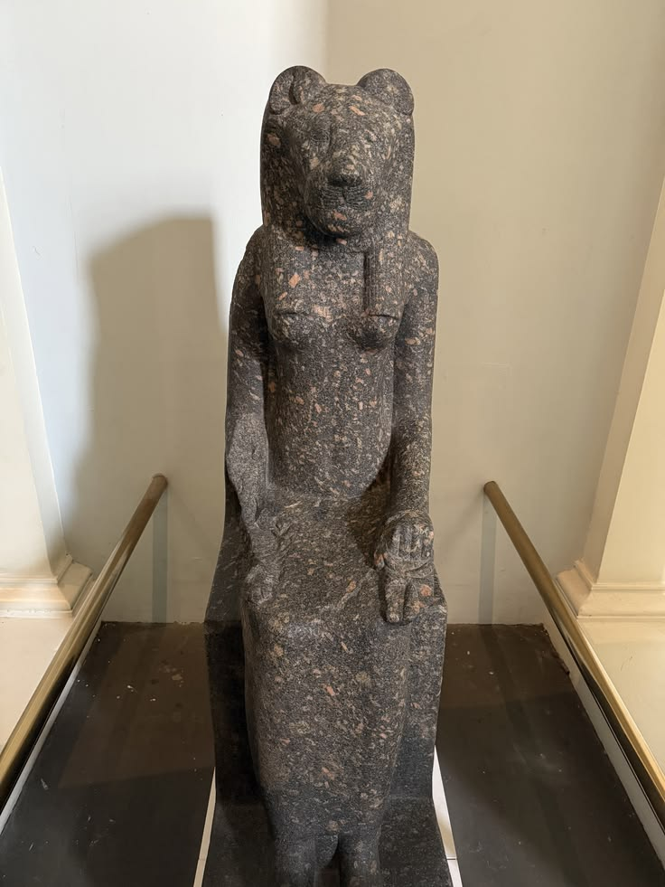

«Мать» — и просто «мать»
Бывают боги, рождённые мифом, — а бывают рождённые словом. Мут именно такая: её имя — mwt — значит всего «мать», без эпитетов и биографий. За этой краткостью стоит самое древнее из чувств: перво-богинями Верхнего Египта были матери с птичьими крыльями — стервятник Нехбет укрывает царя, стервятник Мут укрывает мир. В углу к югу от нынешнего Карнака, где и теперь темнеет священное озеро Ашеру, Мут чтили, видно, тогда, когда Фивы были лишь городком на излучине Нила — Амона она не ждала; это он её нашёл.
Всё меняет триумф фиванской династии: князья, вновь собравшие Египет около 2055 года до н. э., возвысили своего бога — а с ним и его древнюю соседку. В Карнаке сложилась триада, чью соразмерность чувствовала вся страна: Амон — сокрытая тайна мира, Мут — его мать, Хонсу — луна, их сын, считающий время. Материнство здесь не метафора, а имя: фараон — «её сын», и на барельефах богиня, кормящая царя, даёт ему законность не меньшая, чем любое войско.
Корона двух держав
Мут — единственная богиня, упорно носящая двойную корону — пшент Верхнего и Нижнего Египта. Как будто обе земли были отданы ей на хранение. Из остального она скромна: наброс из стервятника, изредка коровьи рога с солнечным диском (в ипостаси Хатор), анх в руке, систр. Писцы Египта обожали омофоны: каждый раз, выводя слово «мать» — mwt, — они называли богиню заново, и каждый раз напоминали, что царь восседает на троне её сыновей.
Эпитеты растут вокруг имени кольцами: «Владычица Неба», «Госпожа Обеих Земель», «Мать богов» — и рядом же пугающее: «Та, что пожинает грешных». Египтяне никогда не скрывали: материнство защищает, а значит, материнство может быть страшно.
Ярость и пир
Богословская фантазия нарисовала нрав Мут в двух красках, и краски эти перетекали друг в друга. Когда Амон стал богом империи и воинств, супруга его стала рычащей львицей — «Секомет Мут», вторым ликом одного пламени. У её озера Ашеру справляли праздник опьянения — обряд, в котором львоглазый гнев богини, потушенный пивом, окрашенным в гранатовый красный, из палача превращается в хозяйку пира. Та же логика правит и самым красивым праздником Фив — Опет: раз в году образы триады навещают друг друга, обновляются священный брак Амона и Мут — и вместе с ним божественное рождение царя.
Её Карнак
Ограда Мут — обнесённый стенами остров к югу от великой ограды Амона. Древнейшие святилища здесь относятся к Среднему царству, но истинный монумент Госпоже воздвиг Аменхотеп III (XIV век до н. э.): пилоны, дворы, чертоги, аллея бараноголовых сфинксов; Рамзес II продолжил, Нектанеб I (IV век до н. э.) обновил стены. Храм блистал золотом и электром — на основаниях сохранился приказ царя матери богов.
Девятнадцатый век отыграл Мут её забытость: в 1896 году французская археологическая миссия, расчищая один из дворов храма, вскрыла клад более чем из 570 статуй и обломков львицы — все созданы при Аменхотепе III. «Секомет Мут» нужна была здесь в количестве, близком к суточному ритму обрядов. А колосс Госпожи из красного гранита с карнакской аллеи и теперь встречает гостей в египетском зале Британского музея: Мут вернулась в мир с удвоенной настойчивостью.
Жрицы Госпожи
Фивы подарили древнему миру самое могущественное женское жречество. Титул «Жена бога Амона» получали царевны крови; их «дом» примыкал к ограде Мут, а влияние в эпохи слабых фараонов равнялось визирскому. При династии кушитских царей Жена бога стала почти соправительницей Верхнего Египта — и, когда фараону Псамтиху I в 664–610 годах до н. э. понадобилось покорить Фивы, он начал не с битвы: его дочь Нитокрис была усыновлена правящей Женой бога Шепенопет. Каменная «стела усыновления» — политический договор необычайной прямоты — и теперь читается в Лувре.
Сама Мут в суете истории не участвует много — как и подобает настоящим дамам: не говорят, а дозволяют. Тысячу лет, от Среднего царства до дней Клеопатры, оставалась она первой дамой Карнака — и Амон, царь богов, не сходил с трона без неё.